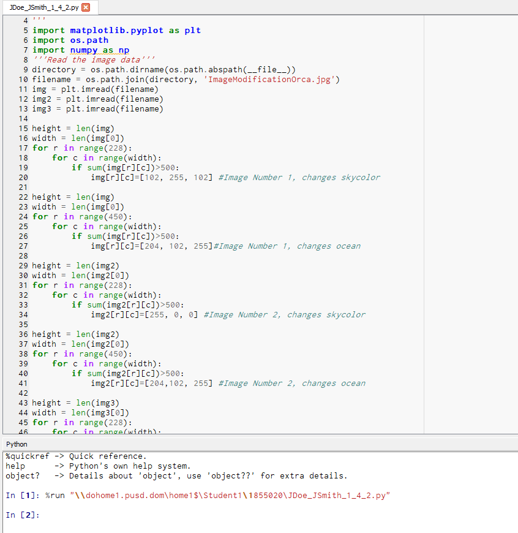
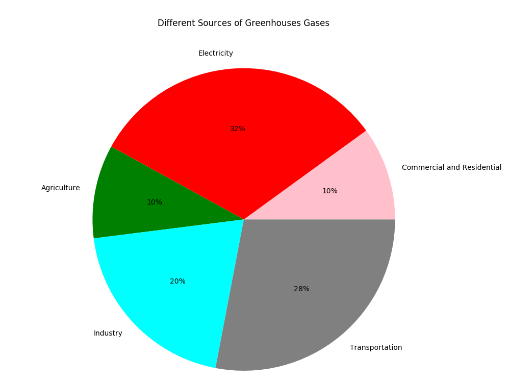
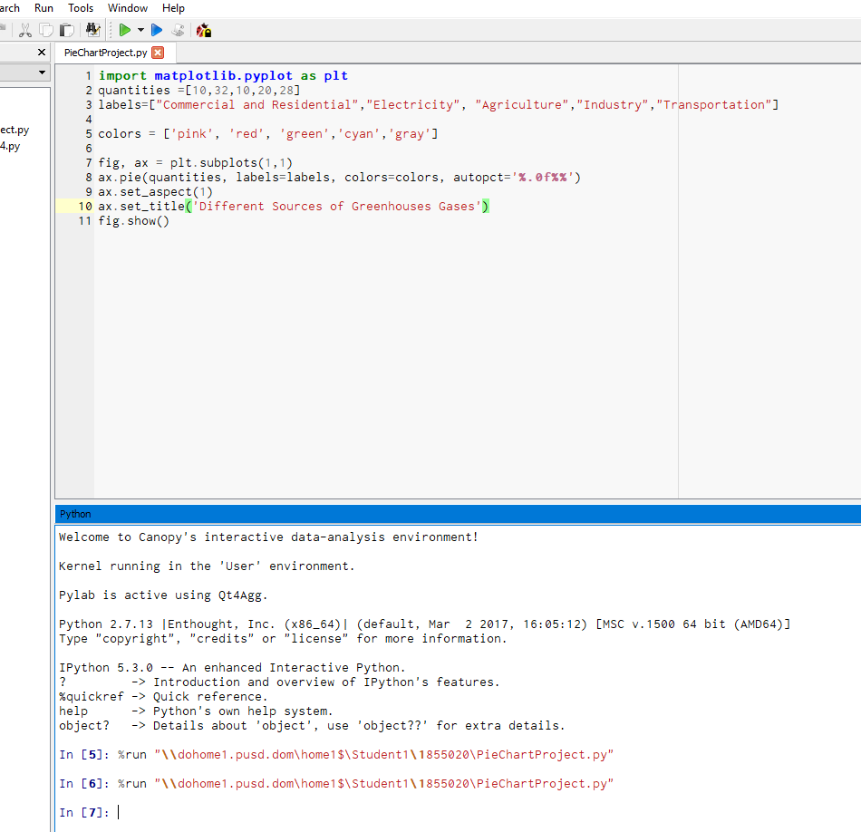
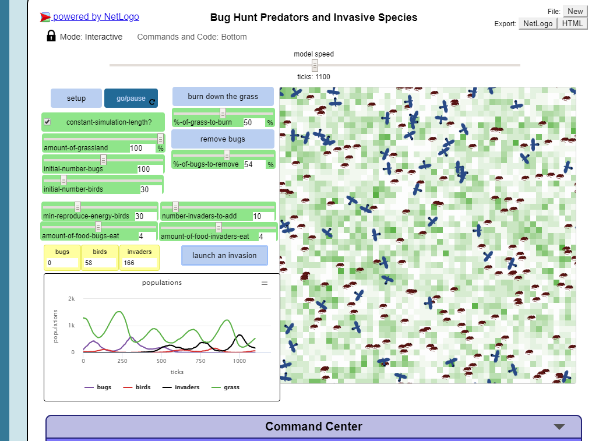
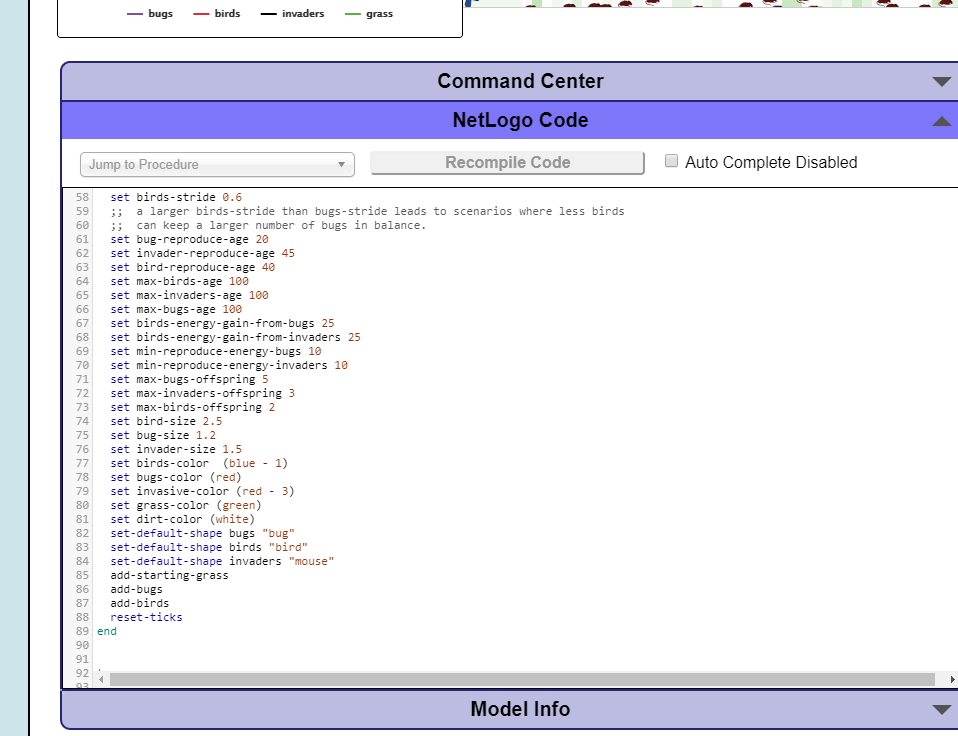

This is my Scratch 1.1.7 Project! With Scratch, we created a game that deals with a cat; the cat needs to avoid getting hit by the balls to prevent gettting moved back to the original starting point! There are 5 backgrounds on our game!
This is my TicTacToe game! We used Mit App Inventor. It's similar to Scratch, but is a bit more advanced, and has a few more features! In our game, players can play Tic Tac Toe against each other.
We also added sound; when the "Reset" button is clicked, the song "Crab Rave" will play!
Here is my Repl.it game! It is called TimeTravelTragedy, where you make the decision to travel forward in time or back in time! Good Luck!
This is my Password Generator! With our generator, you can create hard-to-crack passwords. You can choose the number of passwords you want, and can also how many characetrs per password. It is easy to use, and efficient! Enjoy!

This is my modified picture of a killer whale! Using methods and object-oriented programming, we were able to make a modification of an image. We have the killer whale modified in three colors, (for the sky) as green, red, and orange. The ocean is also purple! Our code is also shown above!


This is our Pie Chart! The question we answered was, "What sources are the main causes of the emission of greenhouse gases?" This is a large issue with society today, as shown above. The source we used was the EPA, or the United States Environmental Protection Agency. (https://archive.epa.gov/epa/cleanpowerplan/learn-about-carbon-pollution-power-plants.html)


This is our NetLogo simulation. In our simulation, we show the relationship between ticks, birds, and grass, and how this relationship is affected when an invasive species, rats, are added to it. At the start of our simulation, the rate of birds and ticks fluctuates only sllightly, eventually reaching equilibrium. However, this changes when we add the rats. As can be seen in the picture, we set the number of initial rats introduced to be 10. We then modified the rats; we made their reproductive age to 45, from 25, so growth would be slower. We then modified bird stride to be higher, to 0.6, which allowed them to keep the rat population in check. The rat population exponetially increases as the simulation goes forward, and eventually the rats overtake the tick population entirely, killing off all ticks. Once the ticks are gone, th rats live off the grass, which we modified to hae a reasonably fast growth rate. (A value of 8) As a result of the increase in rats, the bird population thrives, by eatng the rats. At the end of the simulation, the rats and birds reach a fixed rate of change, as seen by the graph.